Três fichas têm pesos conferidos numa produção real: Ketchup Picante e Maionese de Cebolinha pelas fotos da balança (peso líquido, indicador "Líquido" aceso), e Calabrese pelo registro no app. As outras 24 seguem o documento das fichas e ainda precisam ser pesadas.
A barra mostra quanto cada ingrediente pesa na receita. Ao produzir, pese o pote pronto e registre no app: o peso final valida a ficha.
Condimentos 66% acima da ficha (250 g contra 160 g). * A foto 06 mostra 0,135 kg de páprica; 0,125 kg é o que fecha com o peso final (2,130 − 1,880 kg). O preparo diz validade de 7 dias e o cabeçalho, 12.
Maionese de Cebolinha
Alcaparras e pasta de alho cerca de 3× a ficha; salsa e cebolinha igual à ficha; 3 baldes de maionese na bancada. Confirmar se o lote foi de 3 receitas. Falta o peso final.
Farofa de Bacon
O rendimento (2.520 g) é maior que a soma dos ingredientes (cerca de 1.710 g).
Maionese de Tomate Seco
Rende 2,000 kg com 1,750 kg de ingredientes, sem cozimento.
Maionese de Alho com Lemon Pepper
Rende 2,615 kg com cerca de 2,36 kg de ingredientes.
Maionese Vegana
Rende cerca de 37% menos que a soma dos ingredientes, sem cozimento.
Maionese Verde
Rende cerca de 37% menos que a soma dos ingredientes, sem cozimento.
Ketstarda
Rende 2,453 kg com 2,800 kg de ingredientes, mistura a frio (−12%).
Compota de Bacon
Validade de 12 dias no cabeçalho e de 3 dias no modo de preparo.
Creme de Gorgonzola
Sem validade no cabeçalho; o modo de preparo diz 3 dias.
Maionese Defumada
O passo 1 manda bater tudo, mas os passos 2 e 3 mandam fritar e dourar o alho antes. Fumaça líquida em gramas.
Maionese de Cerveja
Pesos fora do padrão ("1 Kg", "1 Und", "1.503 g") e cebola por unidade, sem peso.
Ketchup de Acerola
Pesos fora do padrão e cebola e tomate por unidade, sem peso.
1
Barbecue
Não validada
Rendimento da ficha12,000 kg
Validade5 dias
Ingredientes
Açafrão em Pó211 g
Água100 ml
Amido de Milho100 g
Caldo de Carne302 g
Chilli em Pó137 g
Fumaça Líquida300 ml
Goiabada Pastosa5,000 kg
Molho Inglês300 ml
Mostarda3,000 kg
Sal150 g
Tomate Pelati2,590 kg
Vinagre de Maçã2,470 L
Preparo
Adicione o tomate pelati em uma panela grande.
Adicione a goiabada pastosa, vinagre e mostarda e misture bem.
No bowl, adicione molho inglês, açafrão, chilli em pó, sal, caldo de carne e misture bem.
Depois adicione tudo na panela e aos poucos adicione no liquidificador para bater, em seguida coloque em outra panela o líquido formado.
Entre com a fumaça líquida.
Leve ao fogo baixo por 30 minutos até cozinhar.
Misture o amido de milho com 100ml de água e coloque no barbecue.
Deixe ferver por 10 minutos e desligue o fogo.
Armazene sob refrigeração (máximo 2ºC) por 5 dias.
2
Base Vegana
Não validada
Rendimento da ficha1,100 kg
Validade12 dias
Ingredientes
Alho Batido50 g
Capim Limão100 g
Limãounidade1 un
Molho Inglês500 ml
Shoyu250 ml
Preparo
Adicione todos os ingredientes em um pote e misture bem.
3
Calabrese
Validada
Rendimento da ficha4,763 kg
Rendimento pesado9,525 kg (2 receitas)
Validade7 dias
Ingredientes
Calabresa1,234 kgpesado 2,468 kg
Cebola Roxa3 unidades564 gpesado 1,128 kg
Maionese2,800 kgpesado 5,600 kg
Molho Inglês250 mlpesado 500 ml
Orégano10 gpesado 0,020 kg
Lote registrado no app por Larissa Raiane, Freguesia, 22/11/2026 às 18:48. A ficha foi atualizada a partir deste lote (maionese 2,800 kg por receita).
Preparo
Corte a calabresa e a cebola roxa em pedaços médios.
Frite um pouco numa panela e reserve.
Quando a calabresa esfriar, junte com os demais ingredientes num pote e misture bem.
Bata no cutter até formar uma pasta.
4
Cebola Caramelizada na Cerveja
Não validada
Rendimento da ficha2,055 kg
Validade5 dias
Ingredientes
Açúcar Mascavo350 g
Cebola Branca1,890 kg
Cerveja946 ml
Molho Inglês300 ml
Molho Shoyu200 ml
Preparo
Corte a cebola branca em pedaços pequenos.
Adicione a cebola cortada em uma panela e coloque os demais ingredientes.
Em fogo baixo, deixe ela ferver até reduzir.
5
Cheddar Cremoso
Não validada
Rendimento da ficha10,967 kg
Validade12 dias
Ingredientes
Água5,000 L
Cheddar Fatiado3 Peças6,081 kg
Creme de Leite800 g
Leite em Pó400 g
Preparo
Adicione a água em uma panela grande.
Adicione o creme de leite e o leite em pó e mexa bem.
Corte o queijo em quadrados pequenos e adicione na panela.
Leve em fogo baixo e mexa bem até dissolver e ficar consistente.
Armazenar sob refrigeração (máximo 2ºC) por 12 dias.
6
Compota de Bacon
Divergência no documento
Rendimento da ficha7,532 kg
Validade12 dias
Validade de 12 dias no cabeçalho e de 3 dias no modo de preparo.
Ingredientes
Açúcar Mascavo651 g
Alho batido100 g
Bacon em cubos5,000 kg
Chilli em pó100 g
Ketchup2,000 kg
Tomate pelati2,033 kg
Vinagre Balsâmico1,500 L
Preparo
No liquidificador, adicione o bacon e processe até ficar bem desfiado.
Adicione tomate pelati, alho batido, chilli em pó, açúcar mascavo, vinagre balsâmico e ketchup.
Em uma panela, cozinhe o bacon.
Em seguida, entre com o molho, deixe cozinhar por 40 minutos em fogo baixo.
Armazenar sob refrigeração (máximo 2ºC) por 3 dias.
7
Creme de Gorgonzola
Divergência no documento
Rendimento da ficha3,000 kg
Validadenão informada
Sem validade no cabeçalho; o modo de preparo diz 3 dias.
Ingredientes
Água1,000 L
Amido de Milho100 g
Creme de Leite400 g
Gorgonzola1,500 kg
Leite em Pó200 g
Preparo
Adicione a água no liquidificador.
Corte o gorgonzola em pedaços pequenos e adicione no liquidificador.
Adicione o leite em pó e bata tudo até dissolver bem.
Em seguida, adicione o creme de leite no liquidificador e deixe bater bem.
Coloque o creme de gorgonzola em uma panela.
Deixe em fogo baixo até ferver por 20 minutos.
Armazenar sob refrigeração (máximo 2ºC) por 3 dias.
8
Ketchup Picante
Validada com divergência
Rendimento da ficha2,000 kg
Rendimento pesado2,130 kg
Validade12 dias
Condimentos 66% acima da ficha (250 g contra 160 g). * A foto 06 mostra 0,135 kg de páprica; 0,125 kg é o que fecha com o peso final (2,130 − 1,880 kg). O preparo diz validade de 7 dias e o cabeçalho, 12.
Ingredientes
Chilli em Pó80 gpesado 0,125 kg
Ketchup2,000 kgpesado 1,880 kg
Páprica Picante80 gpesado 0,125 kg*
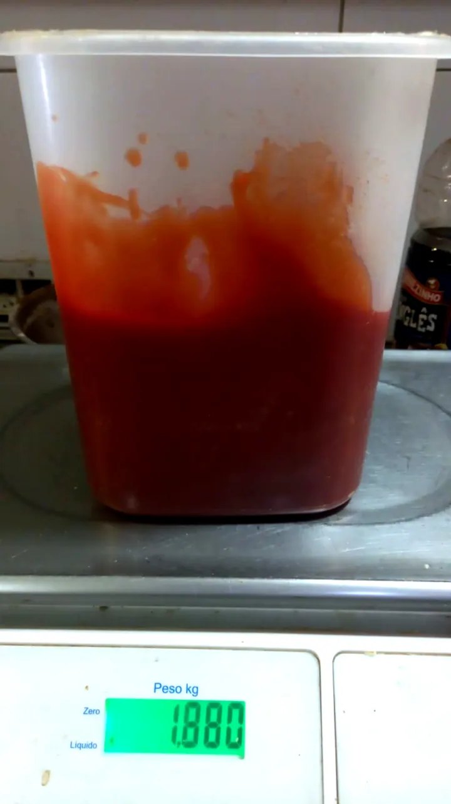
Ketchup1,880 kgfoto 04
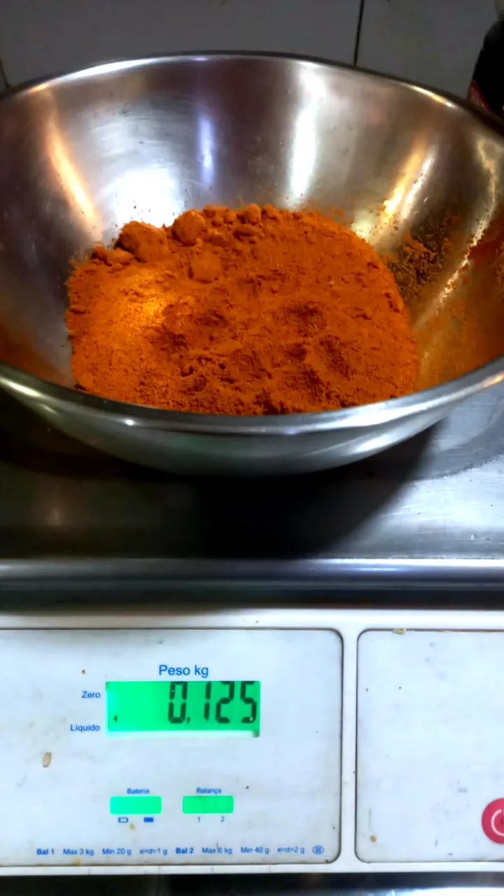
Chilli em pó0,125 kgfoto 05
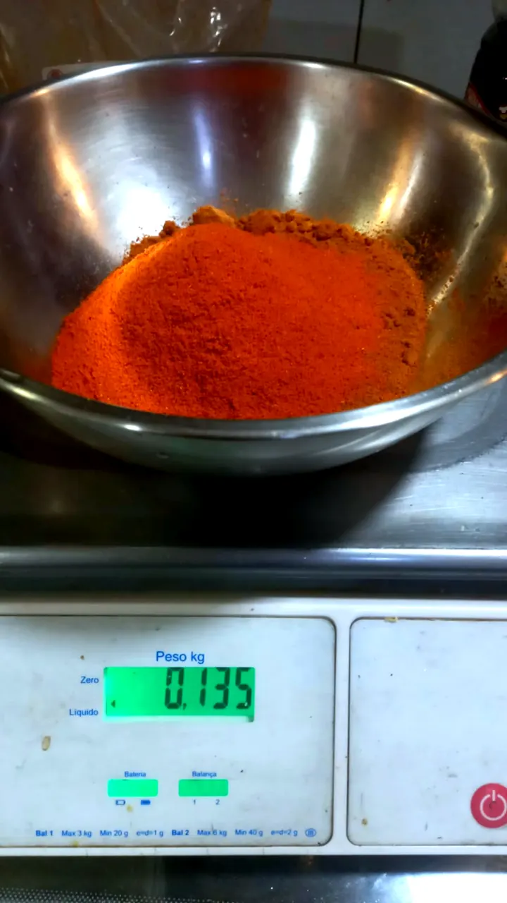
Páprica picante0,135 kgfoto 06
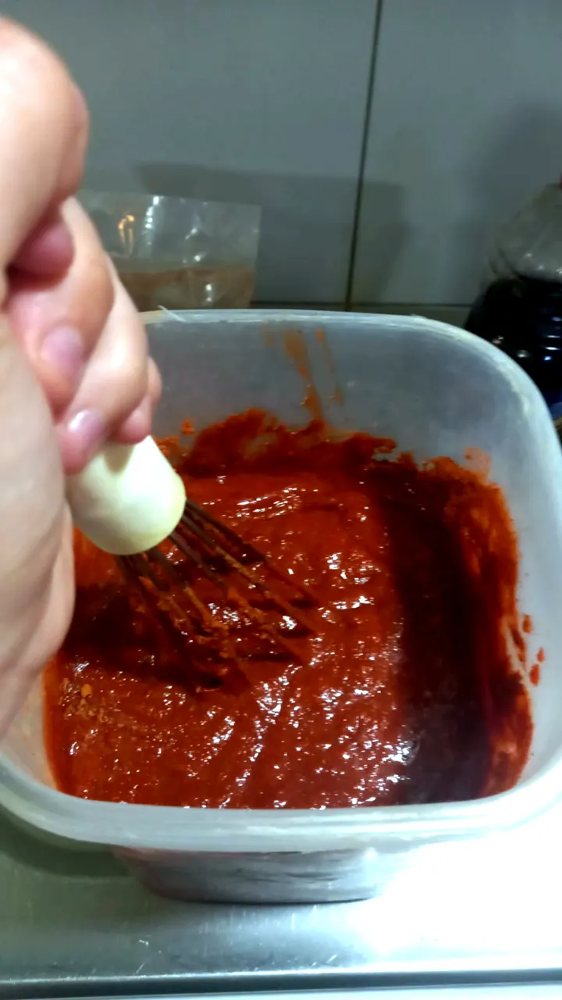
Misturandosem pesagemfoto 08
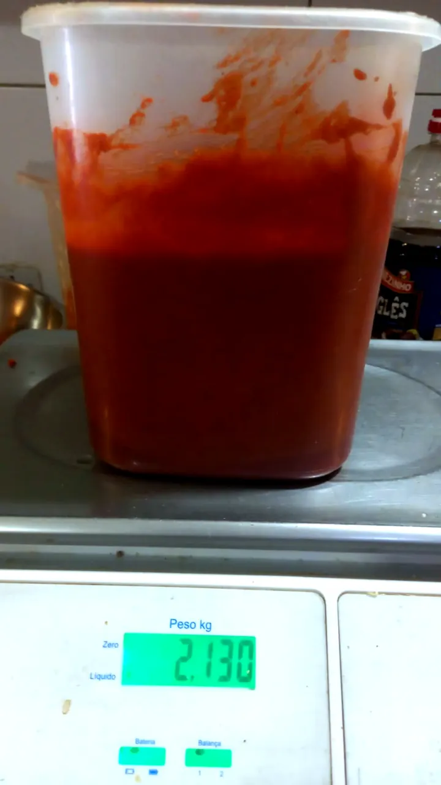
Pronto (rendimento)2,130 kgfoto 10
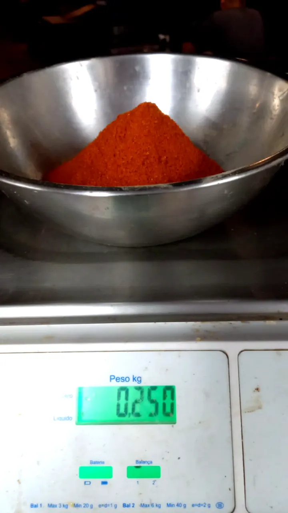
Condimentos juntos0,250 kgfoto 21
Fotos enviadas ao grupo "Ficha Técnica" em 23/11/2025, 03:56. O WhatsApp apaga a data da câmera; a produção foi nesse horário ou pouco antes.
Preparo
Pese o ketchup no pote, com a balança zerada no pote vazio.
Pese o chilli em pó e a páprica picante no bowl.
Adicione os condimentos ao ketchup e misture bem com o fuê.
Pese o pote pronto e anote o rendimento.
Armazene sob refrigeração (máximo 2 °C).
9
Ketstarda
Divergência no documento
Rendimento da ficha2,453 kg
Validade5 dias
Rende 2,453 kg com 2,800 kg de ingredientes, mistura a frio (−12%).
Ingredientes
Açúcar Cristal100 g
Ketchup1,000 kg
Mostarda1,500 kg
Páprica Defumada100 g
Páprica Picante100 g
Preparo
Em um pote adicione os ingredientes e misture bem com um fuê até dissolver tudo.
Armazenar sob refrigeração (máximo 2ºC) por 5 dias
10
Maionese de Alho com Lemon Pepper
Divergência no documento
Rendimento da ficha2,615 kg
Validade3 dias
Rende 2,615 kg com cerca de 2,36 kg de ingredientes.
Ingredientes
Água500 ml
Leite em Pó100 g
Lemon Pepper100 g
Óleo1,800 L
Preparo
Adicione no liquidificador a água e o leite em pó, e dissolva bem.
Adicione aos poucos o óleo até ficar com textura cremosa.
Adicione o Lemon Pepper por último e misture bem com um pão duro, no liquidificador.
Armazenar sob refrigeração (máximo 2ºC) por 3 dias.
11
Maionese de Cebola Roxa
Não validada
Rendimento da ficha2,490 kg
Validade3 dias
Ingredientes
Cebola roxa± 3 unidades860 g
Maionese1,580 kg
Pimenta verde em conserva50 g
Preparo
Corte a Cebola roxa em 4 pedaços e adicione junto com os demais ingredientes no liquidificador, até dissolver bem.
Armazenar sob refrigeração (máximo 2ºC) por 3 dias.
12
Maionese Clássica
Não validada
Rendimento da ficha2,690 kg
Validade5 dias
Ingredientes
Alho100 g
Cream Cheese400 g
Ketchup400 g
Mix de Legumes em conserva600 g
Maionese1,200 kg
Preparo
Adicione tudo no liquidificador e deixe bater até misturar bem.
Armazenar sob refrigeração (máximo 2ºC) por 5 dias.
13
Maionese de Bacon
Não validada
Rendimento da ficha4,296 kg
Validade5 dias
Ingredientes
Bacon cubo ou fatiado1,000 kg
Cebola Roxaaprox. 3 unidades880 g
Maionese3,000 kg
Preparo
Corte a cebola roxa em quatro pedaços.
Em uma panela adicione o bacon e deixe cozinhar.
Adicione a cebola e deixe cozinhar por mais 20 minutos.
Deixe esfriar, adicione o bacon com a cebola no liquidificador e adicione a maionese aos poucos.
Misture com um pão duro, até a consistência ficar pastosa.
Armazenar sob refrigeração (máximo 2ºC) por 5 dias.
14
Maionese de Cebolinha
Validada com divergência
Rendimento da ficha3,780 kg
Rendimento pesadonão pesado
Validade5 dias
Alcaparras e pasta de alho cerca de 3× a ficha; salsa e cebolinha igual à ficha; 3 baldes de maionese na bancada. Confirmar se o lote foi de 3 receitas. Falta o peso final.
Ingredientes
Alcaparras (sem água)150 gpesado 0,445 kg
Maionese3,000 kgpesado 3 baldes de 3 kg
Pasta de Alho80 gpesado 0,224 kg
Salsa e Cebolinha2 salsas / 3 cebs647 gpesado 0,647 kg
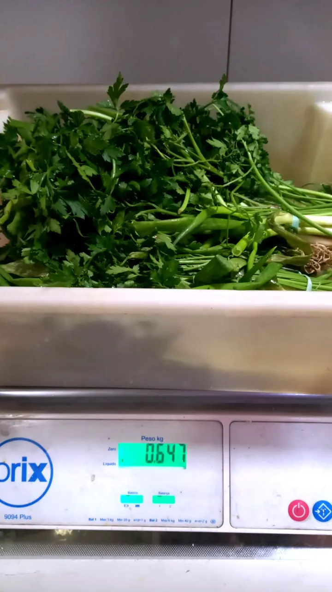
Salsa e cebolinha0,647 kgfoto 12
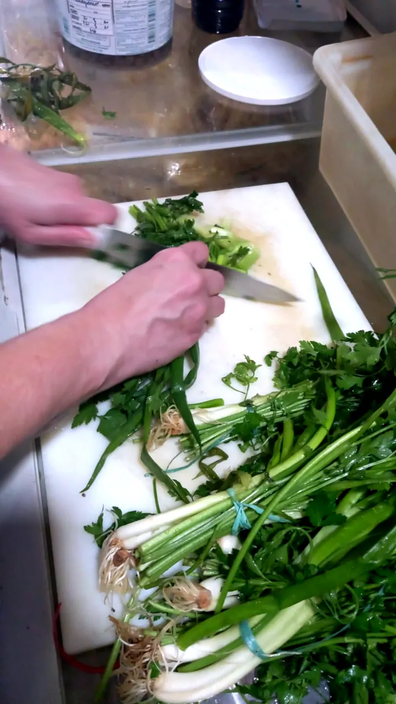
Cortando as ervassem pesagemfoto 13
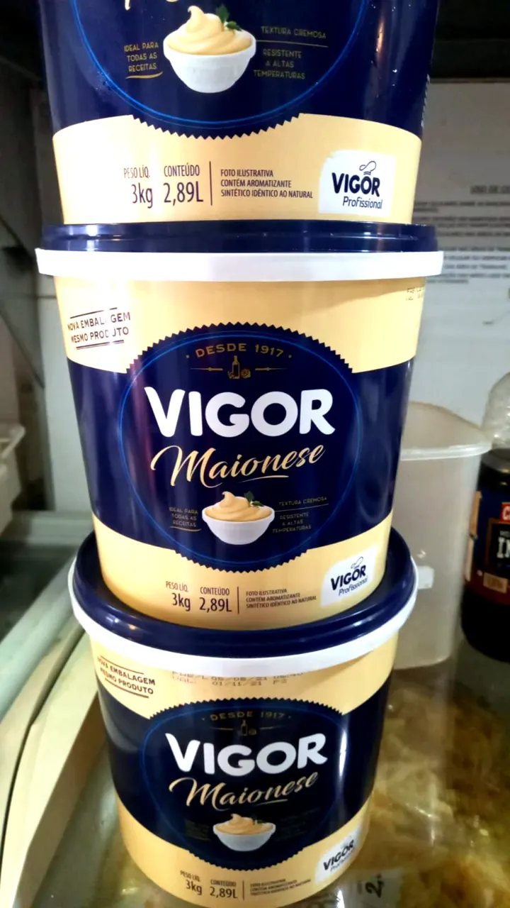
Maionese (3 baldes de 3 kg)sem pesagemfoto 14
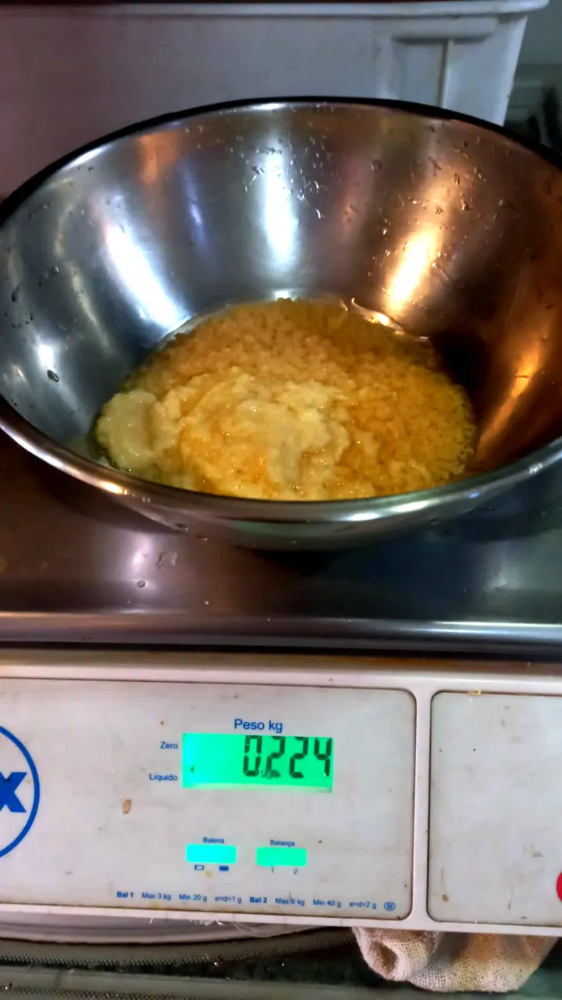
Pasta de alho0,224 kgfoto 15
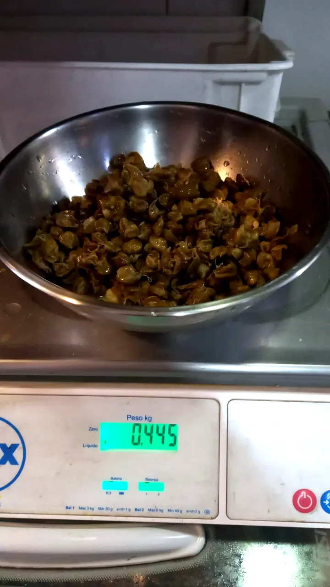
Alcaparras0,445 kgfoto 16
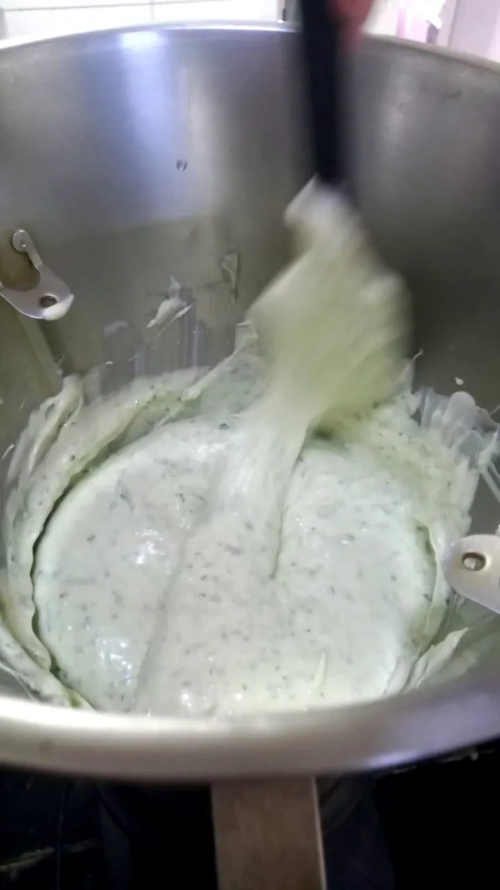
Finalizandosem pesagemfoto 19
Fotos enviadas ao grupo "Ficha Técnica" em 23/11/2025, 03:58. O WhatsApp apaga a data da câmera; a produção foi nesse horário ou pouco antes.
Preparo
Corte a salsa e a cebolinha em pedaços pequenos e coloque num pote grande.
Adicione a pasta de alho e as alcaparras e misture bem.
Adicione a maionese e mexa bem.
Aos poucos, passe a mistura no liquidificador.
Com a espátula (pão-duro), mexa até virar uma pasta.
Pese o pote pronto e anote o rendimento.
Armazene sob refrigeração (máximo 2 °C) por 5 dias.
15
Maionese de Leite
Não validada
Rendimento da ficha1,314 kg
Validade5 dias
Ingredientes
Água400 ml
Leite em pó100 g
Óleo900 ml
Preparo
Adicione a água com leite em pó no liquidificador e bata até dissolver o leite.
Em seguida entre com o óleo aos poucos, até ficar cremoso.
Armazenar sob refrigeração (máximo 2ºC) por 5 dias.
16
Maionese de Tomate Seco
Divergência no documento
Rendimento da ficha2,000 kg
Validade5 dias
Rende 2,000 kg com 1,750 kg de ingredientes, sem cozimento.
Ingredientes
Caldo de galinha50 g
Maionese1,500 kg
Tomate seco200 g
Preparo
Adicione tudo no liquidificador e deixe bater até misturar bem.
Armazenar sob refrigeração (máximo 2ºC) por 5 dias.
17
Maionese Defumada
Divergência no documento
Rendimento da ficha2,085 kg
Validade5 dias
O passo 1 manda bater tudo, mas os passos 2 e 3 mandam fritar e dourar o alho antes. Fumaça líquida em gramas.
Ingredientes
Alho200 g
Caldo de galinha55 g
Fumaça líquida300 g
Maionese1,500 kg
Pimenta Preta Moída30 g
Preparo
Adicione tudo no liquidificador e deixe bater até misturar bem.
Fritar o alho e depois adicionar todo o restante.
Dourar o alho inteiro
Armazenar sob refrigeração (máximo 2ºC) por 5 dias.
18
Maionese Vegana
Divergência no documento
Rendimento da ficha500 g
Validade5 dias
Rende cerca de 37% menos que a soma dos ingredientes, sem cozimento.
Ingredientes
Base vegana250 ml
Leite de soja80 g
Óleo500 ml
Preparo
No liquidificador adicione a base vegana e o leite de soja e bata bem até dissolver tudo.
Em seguida entre com o óleo aos poucos até dar o ponto de consistência mais cremoso.
Armazenar sob refrigeração (máximo 2ºC) por 5 dias.
19
Maionese Verde
Divergência no documento
Rendimento da ficha670 g
Validade3 dias
Rende cerca de 37% menos que a soma dos ingredientes, sem cozimento.
Ingredientes
Alho30 g
Caldo de carne2 g
Cebola Roxa25 g
Óleo900 ml
Orégano1 g
Ovosunidade3 un
Sal7 g
Salsa24 g
Preparo
No liquidificador, adicione salsa, cebola roxa, orégano, caldo de carne, alho, ovos e sal.
Deixe bater bem até dissolver tudo.
Entre com o óleo até ficar cremoso.
Armazenar sob refrigeração (máximo 2ºC) por 3 dias.
20
Mostarda e Mel
Não validada
Rendimento da ficha1,523 kg
Validade12 dias
Ingredientes
Mel530 g
Mostarda Amarela1,000 kg
Preparo
Em um pote adicione o mel e a mostarda, com um fuê misture bem, até ficar bem misturado.
Armazenar sob refrigeração (máximo 2ºC) por 12 dias.
21
Picles de Pepino em Conserva
Não validada
Rendimento da ficha4,828 kg
Validade30 dias
Ingredientes
Água600 ml
Coentro em grãos100 g
Pepino japonês2,918 kg
Sal6 colheres rasas280 g
Vinagre de maçã1,500 L
Preparo
Em uma panela adicione água, vinagre, sal e coentro em grãos.
Deixe ferver por 20 minutos, em fogo baixo.
Lamine o pepino em cortes finos e coloque dentro de um pote.
Adicione a mistura da panela no pote dos pepinos.
Deixe fechado por 2 dias antes de usar.
22
Sal da Batata
Não validada
Rendimento da ficha1,500 kg
Validade30 dias
Ingredientes
Páprica Defumada250 g
Páprica Picante250 g
Sal1,000 kg
Preparo
Adicione todos os ingredientes em um pote e mexa bem.
23
Sal da Carne
Não validada
Rendimento da ficha1,500 kg
Validade30 dias
Ingredientes
Coentro em pó250 g
Pimenta do reino moída250 g
Sal1,000 kg
Preparo
Adicione todos os ingredientes em um pote e mexa bem.
24
Tempero do Bogwing
Não validada
Rendimento da ficha843 g
Validade10 dias
Ingredientes
Água300 ml
Alho Batido50 g
Caldo de Galinha65 g
Cerveja473 ml
Preparo
Adicione todos os ingredientes em um pote e mexa bem.
25
Maionese de Cerveja
Divergência no documento
Rendimento da ficha1.503 g
Validade10 dias
Pesos fora do padrão ("1 Kg", "1 Und", "1.503 g") e cebola por unidade, sem peso.
Ingredientes
Cerveja473 ml
Caldo de Carne30 g
Maionese1,000 kg
Cebola Roxaunidade1 un
Preparo
Corte a cebola em 4 pedaços e adicione na panela com caldo de carne e cerveja
deixe em fogo baixo por 15 minutos
deixe esfriar, logo em seguida adicione a maionese no liquidificador e bata bem até dissolver tudo.
26
Farofa de Bacon
Divergência no documento
Rendimento da ficha2.520 g
Validade10 dias
O rendimento (2.520 g) é maior que a soma dos ingredientes (cerca de 1.710 g).
Ingredientes
Farinha Panko500 g
Caldo de Carne20 g
Bacon Cubo1,000 kg
Cebola Roxaunidade1 un
Preparo
Corte a cebola em 4 pedaços e refogue na frigideira com óleo
Deixe armazenado esfriando e frite 1 kg de bacon cubos
Deixe armazenando até esfriar
Assim que tiver frio, coloque no cutter todos os ingredientes e deixe processar bem
Em seguida adicione na panela em fogo baixo e mexa até secar bem.
27
Ketchup de Acerola
Divergência no documento
Rendimento da ficha1.825 g
Validade10 dias
Pesos fora do padrão e cebola e tomate por unidade, sem peso.
Ingredientes
Polpa de Acerola800 g
Tomateunidade1 un
Pasta de alho100 g
Cebola Roxaunidade1 un
Água100 ml
Páprica Picante15 g
Açúcar Mascavo350 g
Vinagre de Maçã300 ml
Amido de Milho60 g
Preparo
Adicione Todos os ingredientes, exceto o amido, no liquidificador
Deixe bater bem, até dissolver bem todos os ingredientes
Passe para uma panela grande e deixe no fogo baixo por meia hora
Assim que levantar fervura, adicione o amido mexendo bem para dissolver.